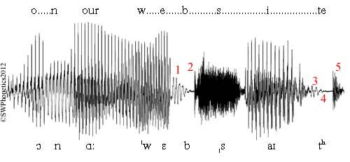

2 Setup Python
Justin Andrew Johnson
2.1 Goals for this video lecture
- Install Git and integrate with Github
- Install Visual Studio Code (VS Code)
- Install Python
3 Section 1: Installing Git and getting organized
3.1 Create a new account on GitHub
- Go to github.com
- Choosing your username is a surprisingly important decision.
- Most people end up using the same GitHub account across many years/jobs
- Choose your username wisely.
- Don’t be xX_noscope_CODR_Xx
You can associate it with whatever email you want, but I would suggest using one you know you have permanent access to.
E.g., I use my personal gmail account still.
Cause I don’t have tenure yet!
Also I don’t trust OIT.
- Please don’t tell them I said so.
Of course I don’t trust Google either � so yeah.
Python_Assignment_0 (described in a slide below) will require you to email me your github ID so I can add you to the class repository.



4 Get the git software

Choose the right operating system and install with all default options.
Git vs. GitHub
Github is a website that hosts code and connects a community of coders.
Git is a “version control” software tool that records the history of files in a Git repository.
Nearly every coder uses Git to push their repository of code to GitHub.

5 Section 2: Installing Python
6
7 Download “Mambaforge”

https://github.com/conda-forge/miniforge#mambaforge
If you have an “m1 or m2” chip (a relatively new apple chip, make sure you select the Apple Silicon option).
If you get a “Windows Protected your PC”, click Run Anyway.


8 Install Mambaforge
Probably choose Just Me unless you know what you’re doing.
I strongly recommend you install it in C:\Users\<YOUR_USERNAME>\mambaforge
Keep all defaults EXCEPT make sure you do check “Add Mambaforge to my PATH environment Variable”


9 Launch the Miniforge Prompt
On windows, it creates a convenient “Miniforge Prompt”. This launches Window’s “Command Prompt” with Conda activated.
(You can tell it’s activated because it shows that you’re in the (base) environment.
On MacOS, it should already be activated, so just type “mamba init”

10 Create a new “environment”
In the Miniforge Prompt, run the following two lines one after the other.
mamba create -n 8222env1 -c conda-forge
mamba activate 8222env1
The first command creates a fresh Python environment named “8222env1”. The second command activates it.
You can tell it is activated because now (base) is replaced with (8222env1)

11 Install a ton of packages
With the following command in the Miniforge Prompt:
- mamba install -c conda -forge natcap.invest geopandas rasterstats netCDF4 cartopy xlrd markdown qtpy qtawesome plotly descartes pygeoprocessing taskgraph cython rioxarray dask google-cloud-datastore google-cloud-storage aenum anytree statsmodels openpyxl seaborn twine pyqt ipykernel imageio
When you’re done, it should look like the image here.

12 Install a few more
This time using PIP
- pip install mglearn datascience hazelbean
Success! You now have a modern scientific computing environment (sometimes called a scientific computing stack) on your computer!


13 Section 3: Installing VS Code
14 Download Visual Studio Code (VS Code)
code.visualstudio.com/download
I recommend selecting the “User Installer”, 64-bit option for windows. is okay.

15 Launch VS Code
We’ll talk about it more in class, but VS Code is becoming the most-used “integrated development environment” (IDE) across nearly all programming languages, including remarkable growth among R users.

16 I prefer the light color scheme
Apparently that makes me in the tiny minority among hackernews, reddit/r/ProgrammerHumor or other centers of intelligencia for coding

17 Install the VS Code Python Extension

Click the extensions tab.
Then install the Python extension
You’re done with the setup and can start Python Assignment 0.

18 Python Assignment 0
19 On Canvas, go to Assignment 4 part 1

You will submit into this canvas assignment the output of the code below (this will prove to me you’ve done everything you need to and we’ll be ready to dive into Machine Learning!). If you’re auditing this course, just email me your github name and the output of the assignment below.
Assignment:
1. Open a terminal to run Python. If you’re on Windows, you can do this in the start menu by searching for or finding “Miniforge Prompt”. On mac, you can just use the built in terminal.
2. Enter the following text into the terminal, one line at a time:
mamba init
mamba activate 8222env1
python
import hazelbean
print(5 + 3)
print(hazelbean)
3. Copy and paste the last line of output from these commands into the Canvas assignment, along with your GitHub username. If everything was done correctly, the outline line should start with “<module ‘hazelbean’”.
4. Celebrate!

20 Appendix and errata
21 If you didn’t set your path to have mamba in it:
The following windows command (replacing the username) will set it to the path.
SETX PATH “%PATH%;C:\Users\<YOUR_USERNAME>\mambaforge;C:\Users\<YOUR_USERNAME>\mambaforge;”